Chapter 4 Segmental contrasts
4.1 Chapter overview
One of the key tasks an infant learner needs to tackle when they learn the phonology of a language is to find out what types of sounds are made use of in the language and what relationship those sounds have to each other. In the previous chapter, we saw that very young infants exposed only to English detect the difference between [p] and [b] and between [ɑ] and [ɑ̃]. But only the first pair constitutes a meaningful difference in English (i.e., they are contrastive) in the sense that it can distinguish different words, such as pear and bear. Both the oral vowel [ɑ] and nasal vowel [ɑ̃] can be heard in some English words, as in the North American pronunciation of laud [lɑd] and lawn [lɑ̃n]), but they cannot be used to distinguish words. The nasal [ɑ̃] only occurs before a nasal sound, so English does not have a word like [lɑ̃d] that is different from laud. English-learning infants must therefore learn that [p] and [b] are contrastive but [ɑ] and [ɑ̃] are not. In this chapter, we will look at how infants and children learn these contrastive, or phonemic, units in the language, focusing on segments (i.e., consonants and vowels). As in our discussion about the initial speech capacities in the previous chapter, we will first look at this process from the viewpoint of perception and then of production.
4.2 Perception of segmental contrasts
4.2.1 Early perceptual reorganization
Infants’ segmental perception starts to reflect the specific set of segments they encounter in the ambient language around or before 6 months of age. One indication that this process of perceptual reorganization takes place around that age is seen in the way infants respond to segmental differences that are not contrastive in the language they are exposed to. In a seminal study exemplifying this developmental process, Werker & Tees (1984) tested English-learning infants’ discrimination of one pair of consonants that are contrastive in English ([b] and [d]) and two that are not: the retroflex vs. dental stops ([ʈ] and [t̪]) in Hindi, and the glottalized velar vs. glottalized uvular stops ([kʼ] and [qʼ]) in Nthlakampx, a Salashian language spoken in British Columbia, Canada. The infants were tested using a method called the Operant Headturn Procedure (see Box 3.1 below). The results, summarized in Fig. 4.1, showed that nearly all English-learning infants could discriminate the non-English pairs when they were 6-8 months old. But the proportion of infants who could discriminate those contrasts decreased between 8 and 10 months, and then nearly disappeared by 10-12 months. This was not due to a general decline in infants’ ability to perform this task. English-learning infants could discriminate the native contrast [b] and [d] at 10-12 months (not shown in the figure), and when 11- to 12-month-old Hindi-learning infants were tested on the [ʈ]-[t̪] pair and Nthlakampx-learning infants on the [kʼ]-[qʼ], respectively, they could all discriminate the difference. The decline in perceptual sensitivity around 8-10 months happened only to those pairs of consonants not contrastive in the ambient language.
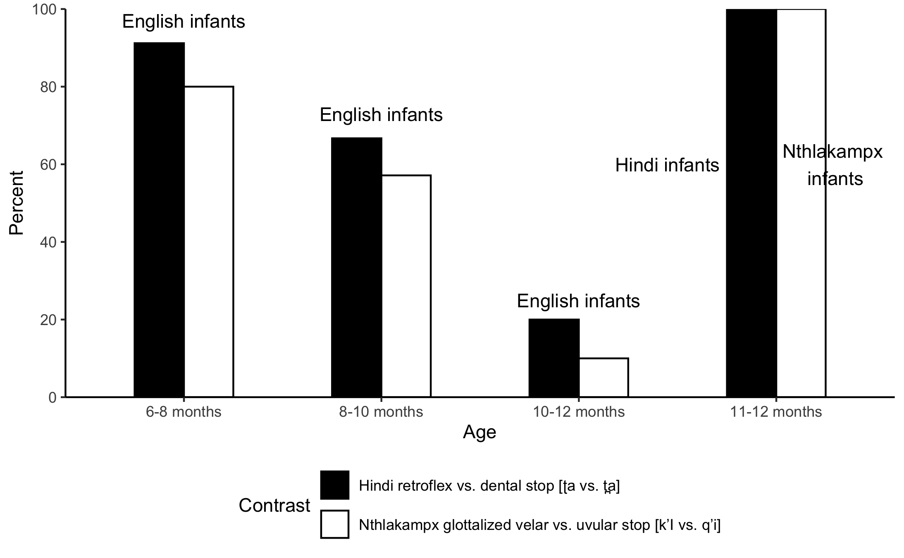
Figure 4.1: Proportion of infants able to discriminate the Hindi and Nthlakampx consonantal contrasts at three different ages. Adapted from Werker & Tees (1984)
- Box 3.1: Operant Head-turn (Conditioned Head-turn)
- In the Operant Head-turn Procedure (sometimes called the Conditioned Head-turn Procedure), infants are trained to turn their heads in response to a change in the auditory stimuli (Moore et al., 1977). In the experiment, the infant sits at a table on the caregiver’s lap. At the table is also an experimenter, typically holding an interesting toy (e.g., a stuffed animal) to get the infant’s attention between trials. On the other side of the table is a box made of plastic panels, the inside of which cannot be seen unless it is lit. In each trial, auditory stimuli are played from a loudspeaker. In some trials (“no-change” trials), the same stimulus is repeatedly played throughout (e.g., … [k’i], [k’i], [k’i], [k’i], [k’i] …). In others (“change trials”), the stimulus changes briefly (e.g., … [k’i], [k’i], [k’i], [k’i], [q’i], [q’i], [q’i], [k’i], [k’i], [k’i] …). When this happens, the plastic box lights up to show a mechanical toy in action (e.g., a monkey banging cymbals). This procedure is repeated so that the infant becomes conditioned to look at the box when there is a stimulus change. A delay is gradually introduced between the stimulus change and the activation of the toy in the box, such that the infant is given an opportunity to turn to the box in anticipation before the toy is revealed. Once the infant meets a threshold for passing the conditioning phase (e.g., three consecutive head turns on change trials), the test phase begins. During the test phase, an equal number of change and no-change trials are given. Infants are considered to be successful at discriminating the two stimuli if they meet a certain criterion. For example, in Werker & Tees (1984), the criterion was 8 out of 10 correct responses to change trials with no more than two wrong responses (not responding to a change or turning their heads in a no-change trial). This procedure is usually used for infants between 6 and 12 months of age.
Such a decline in perceiving consonantal differences has been observed in many other nonnative contrasts, including English-learning infants’ discrimination of the voiced vs. voiceless lateral fricatives ([ɬ]-[ɮ]), voiceless aspirated vs. ejective velar ([kʱ]-[kʼ]) and unaspirated plosive vs. implosive bilabial stops ([p]-[ɓ]) in isiZulu (a Bantu language spoken in South Africa and Lesotho) (Best & McRoberts, 2003), Arabic-learning infants’ discrimination of Hebrew [b] vs. [p] (Segal et al., 2016), and Japanese-learning infants’ discrimination of English [l] vs. [r] (Kuhl et al., 2006) ([p]-[b] and [l]-[r] are not contrastive in Arabic and Japanese, respectively).
A similar decline happens with vowels too, but the timing is slightly earlier. For example, English-learning infants can discriminate German lax high front-rounded vs. high back-rounded vowels ([ʏ]-[ʊ]) and tense high front-rounded vs. high back-rounded vowels ([y]-[u]) at 4 months, but not at 6 months (Polka & Werker, 1994). Spanish-learning infants can discriminate Catalan close-mid vs. open-mid front vowels ([e]-[ɛ]) at 4 months but not at 8 months (Bosch & Sebastián-Gallés, 2003). It appears then that a decline in sensitivity to nonnative contrasts in vowels begins some time before 6-8 months.
This developmental observation, sometimes called perceptual narrowing, might give one the impression that the learning of segmental contrasts is a matter of maintenance or loss. It looks as if infants are born with the ability to detect any type of phonetic difference that signals a segmental contrast in some language, and they maintain this ability if the difference matches a contrast that exists in the language they come to contact with, but lose it if the difference does not match a native contrast. But there are reasons to conclude that this is not the right interpretation of the perceptual decline during this period. Rather, the loss of sensitivity for some phonetic differences is part of a more general perceptual attunement toward segmental contrasts found in the ambient, or native, language.
First of all, not all nonnative contrasts show an age-related decline in discrimination. Note that all the examples of nonnative contrasts we have discussed so far involve two sounds that are similar to a single sound in the native language. For instance, both the Hindi retroflex and dental stops ([ʈ] and [t̪]) are similar to the English alveolar stop ([t]), and both the Nthlakampx glottalized velar and glottalized uvular stops ([kʼ] and [qʼ]) are similar to the English velar stop ([k]). In comparison, when one of the nonnative sounds is similar to a native sound and the other to a different native sound, infants tend to retain their ability to discriminate the nonnative contrasts. For instance, English-learning infants do not show a decline in discriminating the Tigrinya bilabial ejective stop [pʼ] and alveolar ejective stop [tʼ], which are similar to the initial /p/ and /t/ sounds, respectively, in English (Best & McRoberts, 2003). Furthermore, when the nonnative sounds do not resemble any of the sounds in the native language, infants also typically maintain the ability to discriminate the nonnative contrast. Such is the case with English-learning infants’ discrimination of Zulu clicks, which shows no decline in the first year (Best et al., 1988, 1995). These findings indicate that the loss of perceptual sensitivity seen in infants around 6-10 months is due to the emerging effects of native contrasts instead of the lack of reinforcement for preexisting discrimination abilities.
The second reason why early perceptual reorganization is not just about losing sensitivities to nonnative contrasts is that infants also show enhancement in discriminating native contrasts. In Fig. 4.2, we see how English-learning and Japanese-learning infants discriminate tokens of American English [la] vs. [ra], which contain a consonantal difference [l]-[r] that is contrastive in English but not in Japanese (Japanese has a single liquid sound [ɾ] that is neither [l] nor [r]). As expected, we start to see a difference between the English-learning and Japanese-learning infants between 6-8 months and 10-12 months, but the difference comes not only from the decline in the Japanese infants’s sensitivity to what is a nonnative contrast to them; it is also due to an increase in the English-learning infants’ sensitivity to a native contrast.
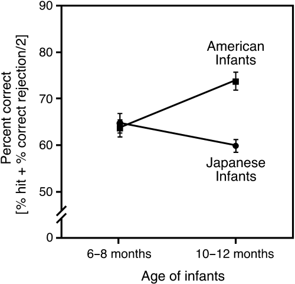
Figure 4.2: Discrimination of [ra]-[la] by English-learning and Japanese-learning infants. Adapted from Kuhl et al. (2006).
Enhancement in discrimination of native contrasts has also been reported for other consonant differences such as the fricative contrasts [s]-[z], [f]-[θ], and [s]-[ʃ] for English-learning infants, the alveopalatal affricate-fricative contrast [tɕ]-[ɕ] for Mandarin-learning infants (Tsao et al., 2006), and the alveolar vs. velar nasal contrast in initial position [na]-[ŋa] for Filipino-learning infants (Narayan et al., 2010). It has also been observed in a range of vowel differences, including [i]-[ɪ] for Dutch-learning infants (Liu & Kager, 2016), [e]-[ø] for Finnish-learning infants (Cheour et al., 1998), and [a]-[aː] (a durational contrast) for Japanese-learning infants (Sato et al., 2010). Additional evidence of perceptual enhancement in vowels can be seen in data based on event-related potentials (ERPs), or patterns of electrical activity in the brain (see Box 3.2 below). Between 6 and 12 months, Finnish-learning infants’ neural response decreases for a nonnative vowel contrast (mid front unrounded [e] vs. mid back unrounded [ɤ]) but increases for a native vowel contrast (mid front unrounded [e] vs. mid front rounded [ø]) (Cheour et al., 1998). Importantly, in some of these cases, such as [na]-[ŋa] in Filipino and [a]-[aː] in Japanese, infants are able to discriminate the native contrast at 10-12 months, but not before 8 months. This too counters the view that early perceptual reorganization is largely about losing preexisting abilities to perceive all potentially meaningful phonetic differences.
- Box 3.2: Event-related potentials (ERPs)
- Event-related potentials (ERPs) are electrical activity patterns that the brain shows in response to a stimulus. They are examined using a technique called electroencephalography (EEG), which measures the voltage fluctuations in the brain that occur as a result of the coordinated firing of neurons in the cerebral cortex. To perform EEG, a cap with electric sensors is placed on the infant’s scalp, and the electrical changes are recorded every 1-5 milliseconds as the infant listens to different auditory stimuli. Because the brain responds to any type of auditory stimulus, simply looking at the ERPs for a single stimulus is not informative in itself. Instead, researchers compare the ERP for one type of stimulus that is played repeatedly as a baseline (the “standard” stimulus) and a second type of stimulus that is interspersed among the standard (the “deviant” stimulus). One type of well-studied ERP pattern is called the mismatch negativity (MMN). MMN is observed about 150-250 milliseconds after the beginning of a deviant stimulus, and shows up as a greater negative charge compared to the wave recorded for the standard stimulus (see Fig 4.3). An MMN response can therefore be used to show whether the brain detects the difference between the two types of stimuli, and how strongly it is responding to the difference, because large deviances usually elicit large MMN.
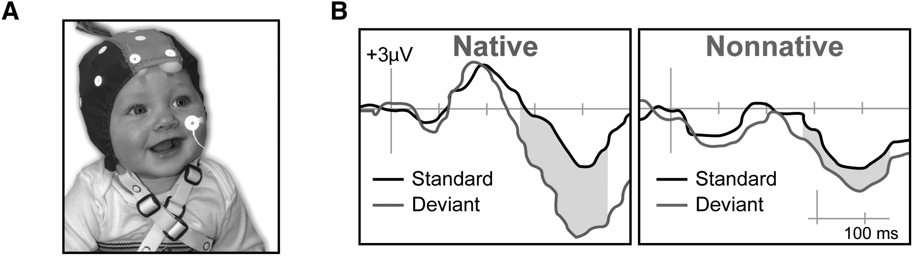
Figure 4.3: A. An infant wearing a cap with EEG sensors. B. Mismatch negativity (MMN) shown in response to a native contrast and a nonnative contrast. Source Kuhl (2010).
Finally, loss of sensitivity to phonetic differences is found not only between sounds that constitute nonnative contrasts, but also around native sounds. In an experiment demonstrating this effect, Kuhl et al. (1992) played two sets of vowel stimuli to 6-month-olds learning English (in the U.S.) and Swedish (in Sweden). One set had 32 variants of the American English vowel /i/, which varied in equal acoustic steps from the “prototype”, a token considered to be an ideal example of /i/. The other set had 32 variants of the Swedish vowel /y/, created in a similar way around the prototype for /y/ (see Fig. 4.4). The English-learning infants were worse than the Swedish infants in detecting a switch between the prototype and a variant of the English /i/, whereas the Swedish infants were worse than their English-learning counterparts in detecting such switches for the Swedish vowel /y/. Why? The explanation is that the English-learning infants have already started to form a sound category that is /i/, with the prototype at the center. Different phonetic tokens around it are all perceived as instances of the same category, making the differences between variants less detectable. The same thing happens to Swedish-learning infants’ perception of tokens around /y/. Kuhl et al. (1992) called this a perceptual magnet effect because it is as if the perception of phonetic tokens around a native sound category was pulled toward the prototype or the center of each native category.
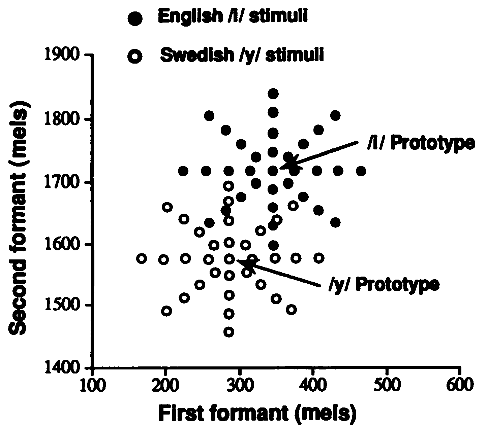
Figure 4.4: Two sets of synthesized vowels corresponding to English /i/ and Swedish /y/. Each included a prototype (the most typical sounding instance) and 32 variants around the prototype. Source: Kuhl et al. (2006).
In sum, during the first year of life, infants undergo systematic changes in their ability to discriminate speech sounds that result their perception becoming more attuned to the sound patterns of the ambient or native language. They become less responsive to differences between sounds constituting a nonnative segmental contrast and more responsive to those forming native contrasts. They also become less responsive to differences between tokens around native sounds. It appears then that during this period, infants are learning something about the way consonants and vowels are patterned in their native language.
4.2.2 Phonetic categories and distributional learning
But what exactly is it that infants are learning about the consonants and vowels in the language during this period? When we say that most 10-month-old English-learning infants discriminate a native contrast such as [b]-[d] but not nonnative one such as [ʈ]-[t̪], we do not mean they already understand that /b/ and /d/ are two phonemes in English that can differentiate words (e.g., bad and dad mean different things), or that they understand the equivalence between acoustically quite different realizations of the phonemes (e.g., the first and last sound in dad are the same phonological unit even though they sound quite different). There is little evidence, at least currently, that 10-month-olds have such functional understanding of segmental contrasts. Rather, what we mean is that they are becoming sensitive to the fact that, in their language, there are different clusters of phonetic phenomena, [b]-like things and [d]-like things, for instance. These clusters are commonly called phonetic categories, the idea being that infants are learning discrete segment-size units of sounds which they can use to classify and differentiate speech sounds, but not necessarily with a full grasp of their phonemic functions.
How these phonetic categories emerge in infants is a question that has been the focus of much research in the past few decades. Before we knew much about the facts of early language development, it was thought that infants discover the consonants and vowels their language much in the same way an adult linguist looks for phonemes in an unknown language; that is, by means of minimal pairs, or pairs of lexical items that differ by one segmental contrast. By this account, infants first learn that fixed units of sounds like bad and dad have different meanings. If this lexical distinction is due to a single opposition, such as [b]-[d], then infants infer that it constitutes a phonemic contrast in the language with members of that contrast (e.g., /b/ and /d/) making up the segmental inventory. For this to be true, however, infants must know enough words that signal these contrasts before 6-10 months, when they undergo the perceptual reorganization that we reviewed in the previous section. Learning words in this context means not just knowing that there are phonological forms such as bad and dad but that they mean different things, or otherwise, they would not be considered separate lexical entries but just different ways to pronounce the same word. So do infants learn enough words with their meanings by 6 months to learn the segmental distinctions of their native language this way? Although 6- to 9-month-olds already understand the basic meanings of some common words such as feet, apple and spoon (Bergelson & Swingley, 2012), the consensus is that their vocabulary is nowhere large enough to provide minimal pairs that cover all the contrasts infants become perceptually sensitive to during that period. Moreover, as we will see in the next section, infants do not appear to understand the consequences of native contrasts for the meanings of words (e.g., that ball would not refer to a round object for playing if the first sound was replaced with [d]) until much later, possibly after 12 months. This means that it is unlikely that the perceptual organization during 6-10 months is driven by the acquisition of minimal pairs.
How else can we explain the emergence of phonetic categories? According to one highly influential proposal, infants do not need to know words in order to learn phonetic categories. They just need to keep track of the distribution of acoustic variation in the speech sounds they hear in the input. This idea is known as distributional learning. Let us see how this works using the example of stop voicing that was discussed in Chapter 3. We saw there that one of the key phonetic correlates of voicing in stops is voice onset time (VOT): Voiceless stops have longer VOTs than voiced ones. Imagine some infants surrounded by adult speakers of a language like English that has a contrast between a voiced and voiceless bilabial stop. These speakers, perhaps the infants’ parents, will be producing many tokens of voiced and voiceless bilabial stops. Suppose we can measure the VOT of those tokens and tally how many of them have a VOT of 0 to 5 ms, 5 to 10 ms, 10 to 15 ms and so on. We are likely to see a distribution of these tokens that looks like that in Panel A of Fig. 4.5. There is a VOT value that is the most frequent for voiceless stops (about 50 ms in this example) and a value that is the most frequent for voiced stops (about 0 ms here). These peaks in the distribution of frequencies or tallies are called modes. Other VOT values will cluster around the two modes but vary depending on several factors, such as who is talking and what word they are saying, in what context. There are even some intended voiced stops with longer VOTs than some of the intended voiceless stops, and some intended voiceless stops with shorter VOTs than some of the intended voiced stops. Suppose the infants are capable of keeping track of this type of information. What they observe will look like Panel C of Fig. 4.5, where the tallies from the voiced and voiceless stops are merged into one because the infants would not know which ones are meant to be voiced and which ones are voiceless. Yet the overall distribution with two modes indicates that the are two underlying categories behind the VOT values. Now, imagine another group of infants. These infants are surrounded by speakers of a language without a voicing contrast for bilabial stops, such as Kikuyu, which we encountered in Chapter 3. Again, there will be variation in VOT values produced by the adult speakers, but only one peak or mode in the distribution, which is where the most frequent value for the single category is (PANEL B). From the viewpoint of the infants, the distribution will look like that in Panel D. While neither groups of infants know ahead of time how many categories along this phonetic dimension exist in the language they are learning, Panels C and D show that they should be able to figure that out based on the pattern of distribution. If there are two modes (bimodal distribution) then there are two categories; if there is only one mode (monomodal distribution) then there is only one category.
![Hypothetical values of voice-onset time (VOT) for bilabial stops produced by speakers of a language with a voicing contrast (Panel A) or a language without a voicing contrast (Panel B). The y-axis in Panels A and B shows counts of tokens. Infants tracking the distribution of stops with different VOT values will detect a bimodal distribution (Panel C) if the language has a voicing contrast, but a monomodal distribution (Panel D) if the language does not have a voicing contrast for stops. The y-axis in Panels C and D shows relative frequency (technically known as density)](images/distlearn.png)
Figure 4.5: Hypothetical values of voice-onset time (VOT) for bilabial stops produced by speakers of a language with a voicing contrast (Panel A) or a language without a voicing contrast (Panel B). The y-axis in Panels A and B shows counts of tokens. Infants tracking the distribution of stops with different VOT values will detect a bimodal distribution (Panel C) if the language has a voicing contrast, but a monomodal distribution (Panel D) if the language does not have a voicing contrast for stops. The y-axis in Panels C and D shows relative frequency (technically known as density)
That is how the explanation works in theory, but whether infants actually have the capacity to learn phonetic categories based on such distributional differences is an empirical question. To test this out, Maye et al. (2002) conducted an experiment with 6- and 8-month-old English-learning infants, using a contrast that does not exist in English. The materials they used were created from a continuum between the syllables [da] and [ta]. Note that [t] here is a voiceless unaspirated alveolar stop, which can be heard after /s/ in words like stop, but not at the onset of a stressed syllable, as in top, where a voiceless alveolar stop is aspirated ([tʰ]) (i.e., produced with a longer VOT). In other words, [da] and [ta] do not form a phonemically contrastive pair in English. To obtain a sample of [ta], Maye et al. (2002) recorded a speaker producing the syllable [sta] and removed the [s]. They then digitally edited this and a sample of [da] to create a speech continuum that interpolated the difference between [da] to [ta] in 8 equal steps. In Fig. 4.6, these stimuli are numbered from 1 to 8, where Stimulus 1 was the original recording of [da] and Stimulus 8 was the original [ta].
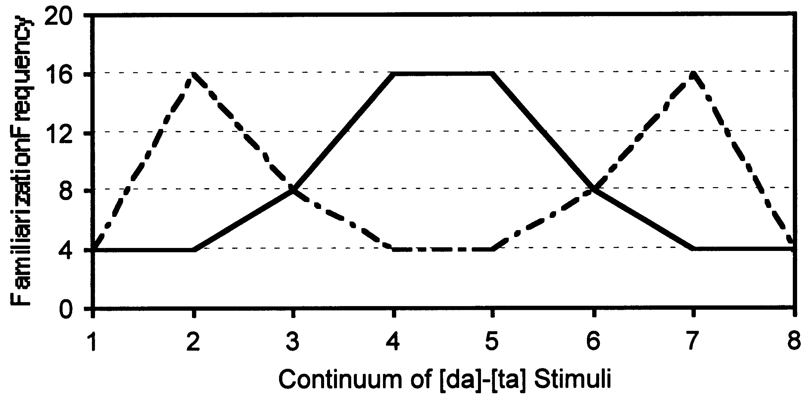
Figure 4.6: Bimodal and unimodal distributions of [da]-[ta] continuum used in Maye et al. (2002). Stimulus 1 is the endpoint [da] stimulus, and Stimulus 8 is the endpoint [ta] stimulus. The y-axis shows the number of times each stimulus was played during the familiarization phase, with the dotted line corresponding to the pattern for the bimodal group and the solid line to the pattern for the monomodal group. Source: Maye et al. (2002).
🔈 This is how the endpoint stimuli would have sounded. These samples were created the same way as Maye et al. (2002), by recording an English speaker saying [da] and [sta], and removing the [s] from [sta] to obtain [ta] with an unaspirated voiceless English stop [t].
The participating infants were assigned to either a bimodal or a monomodal condition. Infants in both conditions heard all 8 stimulus types from the continuum several times each in random order for a total of 64 times, but the number of times they heard each stimulus was different. Those in the bimodal condition heard Stimulus 1 four times, Stimulus 2 sixteen times, Stimulus 3 eight times and so on, following the pattern illustrated by the dotted line in Fig. 4.6. Those in the monomodal condition heard Stimulus 1 four times, Stimulus 2 four times, Stimulu 3 eight times and so on, following the pattern illustrated by the solid line in Fig. 4.6. After this familiarization, they were tested on their ability to discriminate the end tokens (Stimulus 1 and Stimulus 8). Those in the bimodal condition showed evidence of discriminating those two stimuli, but not those in the monomodal condition. The implication is that the distribution of phonetic variation in the input speech can influence the way infants perceive the variation in a way that is consistent with the establishment of phonetic categories.
This study has spawned a great deal of further research on the effects of distributional learning on phonetic category learning. It has been shown that infants undergoing this type of familiarization can even learn distinctions that are not present in, but that are generalizable from, the training stimuli. For instance, English infants familiarized to a bimodal distribution of stops at one place of articulation (e.g., [k]-[g]) become able to discriminate the analogous contrast at another place of articulation (e.g., [t]-[d]) (Maye et al., 2008). The plausibility of this learning mechanism has been further demonstrated in studies using computational models simulating distributional learning, which successfully extract phonetic categories from speech samples (McMurray et al., 2009; Vallabha et al., 2007). Infants seem to be able to invoke this learning mechanism as early as 2 to 3 months (Wanrooij et al., 2014) but they become less amenable to its effects at 10 months than they are at 6-10 months (Yoshida et al., 2010), presumably because by then they are beginning to consolidate the phonetic categories they have acquired from everyday phonetic input.
4.2.3 Limits of distributional learning?
Distributional learning is one of the best accounts of how infants become sensitive to the segmental contrasts in their native language, but it is not without issues. While some contrasts reveal themselves in phonetic distributions like the VOT patterns in Fig. 4.5, others do not seem to be recoverable from the same type of observation. In particular, vowels present a problem because they often show phonetic distribution patterns that are far less decipherable than those that signal consonantal contrasts. Consider the case of English vowels, the main acoustic cues for which are known to be the first and second formants (F1 and F2). Fig. 4.7 shows common American English vowels produced by mothers as they spoke to their own child and an adult investigator. We can immediately see that the high degree of distributional overlap between vowels makes it difficult to recover how many categories underlie the data, even in the speech addressed to infants. The problem of the overlap has been verified by studies that use computational models of distributional learning to identify the full set of English vowel categories in naturalistic speech samples (Antetomaso et al., 2017; Feldman, Griffiths, et al., 2013). These models typically fail to learn the correct number of underlying categories.
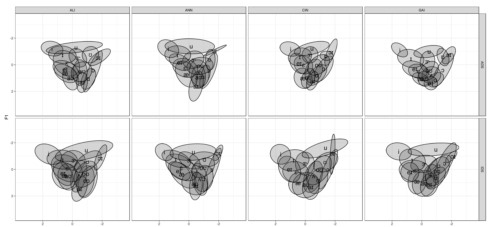
Figure 4.7: F1 and F2 measures of common American English vowels produced by four mothers as they spoke to their own child (i.e., infant-directed speech, top row) and an adult investigator (i.e., adult-directed speech, bottom row). The elliptical shading indicates the area occupied by each vowel 80% of the time. Source: Starling (2019).
Distributional learning fails not only when the distributions of phonetic variation between two or more categories are too similar, but also when the frequencies of the categories are vastly different. This can be illustrated by the frequency distribution of vowels in Japanese shown in Fig. 4.8. Japanese vowels have a five-way contrast in formant quality (/a, e, i, o, u/) and a two-way durational contrast (short vs. long), such that each qualitatively distinct vowel has a short and long version (e.g., /a/ vs. /aː/). The question here is whether there is enough distributional evidence in the duration of the vowels for the learner to detect that there are two categories along that dimension. The problem is that short vowels are much more frequent than long vowels in the input, so their distribution pattern hides that of long vowels (Bion et al., 2013). Take /i/ vs. /iː/ for example. Because there is enough separation between the modes for the short /i/ and long /iː/, if the long vowel /iː/ were as frequent as its short counterpart /i/ in the input, the durational distribution would have been bimodal. But the overall distribution observable to infants is monomodal due to the much lower frequency of the long /iː/.
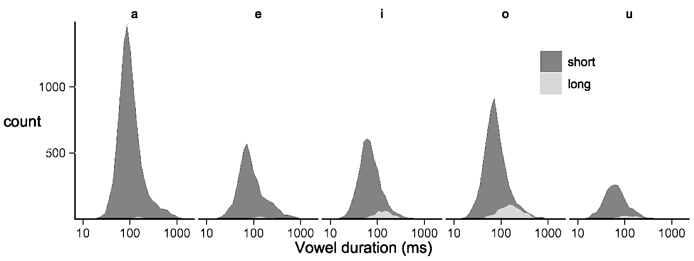
Figure 4.8: Distributions of short and long vowels in Japanese. The y-axis shows the number of times vowels of different durations (given in milliseconds on the x-axis) occurred in a corpus of infant-directed speech. The dark grey areas correspond to the short /a, e, i, o, u/ and the light grey areas correspond to the long counterparts of those five vowels. Source: Bion et al. (2013).
Could this mean that distributional learning cannot explain how infants’ perception becomes attuned to differences between segments with a substantial amount of distributional overlap, such as vowels? One possibility that has been looked into is that the overlap is reduced in infant-directed speech (IDS) because caregivers speaking to infants may hyperarticulate, or produce vowels in a clearer way. Some studies have shown that the overall phonetic space defined by the F1 and F2 of “corner” vowels—vowels with the lowest or highest F1 or F2, such as /a/, /i/ and /u/—is larger in IDS compared to adult-directed speech (ADS) (Burnham et al., 2002; Kuhl et al., 1997; Xu et al., 2013). The effect of this is that the overall phonetic space occupied by vowels tends to be larger in IDS. However, a bigger vowel space does not necessarily mean that the phonetic categories are produced with less overlap. Even if the distance between the vowels increases, they will not be more separable if the variability (or spread) of each vowel increases at the same time. In fact most studies have failed to demonstrate that vowels are more clearly articulated and separable in IDS than in ADS (Cox et al., 2023; Cristia & Seidl, 2014; Englund & Behne, 2005; Martin et al., 2015; Miyazawa et al., 2017). This can be seen by comparing the IDS and ADS vowels in Fig. 4.7. The implication is that distributional learning of vowel categories is probably not made more plausible by hyperarticulation in IDS.
There is another way in which category overlap may be reduced, however. What if infants apply distributional learning only to certain tokens of speech sounds that are more distinct from each other in the phonetic space? This may happen, for instance, if infants preferentially attend to speech sounds that are highlighted through exaggerated prosody. To test this possibility, Adriaans & Swingley (2017) had a phonetically-trained adult listen to vowel tokens produced by mothers talking to English-learning 10-month-olds and classify them into those having “focus” (i.e., prosodically exaggerated pronunciation) or “no focus”. Vowels judged to be in focus had a higher overall pitch, larger pitch movement, and longer duration than those not in focus, and importantly, showed evidence of better separability. This line of work has not yet demonstrated that focusing on a subset of samples like this is enough for infants to uncover vowel categories using distributional learning, but it suggests that helps at least it.
The problem of phonetic overlap in vowels may also be an artifact of the assumptions we are making about the information infants are using in learning phonetic categories. Perhaps we are being too conservative in thinking that the only phonetic information involved in the distributional learning of vowel categories is the first and second formants. Vowels are also characterized by differences in duration, other formants (such as F3, the third formant), and formant movements (changes in formant values between the onset and offset of the vowel). As we saw in the previous chapter, when they perceive speech, infants also use visual information on the talker’s face, such as lip rounding. Adding all these extra features may reduce the ambiguity of the input that infants receive and facilitate the identification of vowel categories (Swingley, 2009). In one of the few studies that systematically investigated this possibility, Starling (2019) used F3, duration and changes in the F1 and F2, as well as mean F1 and F2, to see if the combination of these variables in a multidimensional acoustic space allows computer models to accurately classify vowels in American English from a corpus of infant-directed speech. Even with the additional phonetic information, the models could not accurately classify the vowel tokens. But this solution to the distributional learning of vowels remains largely unexplored as we still do not understand what types of information beyond F1 and F2 are used or how the combinations of information are interpreted by infants.
Another proposed solution to this problem is to bring words back into the picture. Earlier, we rejected the idea that infants discover phonetic categories based on minimal pairs such as bear-pear and bed-bad because it does not seem that they know many such words before their perception begins to adapt to native contrasts. In this context, “knowing words” means knowing both the phonological form and the meaning of words. But by 6 months, infants may already be familiar with many word forms without knowing their exact meanings. Might this familiarity with word forms aid distributional learning? The challenge with distributional learning of vowel categories lies in the fact that the realization of vowels can vary significantly depending on their phonological contexts, such as the sounds that precede or follow them, or whether they occur in stressed or unstressed syllables. Because of that, vowel pairs in English such as [æ]-[ɛ] (as in bad and bed) are virtually indistinguishable based on their F1 and F2 when analyzing all instances of these vowels heard in a speech sample. But consider what may happen when infants begin to remember the phonological forms of words such as /hænd/ (hand) and /lɛg/ (leg), which contain the contrasting vowels. Although they may not yet understand the meanings of these words, they can tell that they are distinct lexical items due to differences in their overall forms. If they observe the formants of [æ] and [ɛ] in pairs of words like these, they are likely to be able to distinguish them on the basis of their phonetic distributions because the specific phonological contexts they occur in means that their phonetic variability is constrained. Different tokens of the vowel /æ/ in the word hand are going to sound much more similar to each other than those across different words, such as hand, dad, apple and cat,
Interestingly, for this process to work, the vowels must be contained in word forms that are distinct enough and not ones that are too similar, such as minimal pairs. Without an understanding of the differences in meanings, minimal pairs like bed-bad could be mistaken as pronunciation variations of the same word, giving the learner no reason to think there may be different vowel categories behind them. The potential role played by non-minimal pairs has been demonstrated by Feldman, Myers, et al. (2013), who familiarized 8-month-olds learning American English with a synthesized vowel continuum between [ɔ] and [ɑ], vowels that are marginally distinct in American English (caught [ɔ] and cot [ɑ] are differentiated only in some regions). Tokens from this continuum were embedded in made-up words that either constituted a minimal pair (gut[ɔ]~gut[ɑ] or lit[ɔ]~lit[ɑ]) or a non-minimal pair (gut[ɔ]~lit[ɑ] or gut[ɑ]~lit[ɔ]). Only those infants exposed to the non-minimal pair condition were subsequently able to discriminate the [ɔ]-[ɑ] contrast. After all, then, infants may be using word-level information to learn phonetic categories, only not from minimal pairs.
These findings highlight the important role played by infants’ knowledge of word forms without associated meanings. Such word forms are known as proto-words. Despite their name, proto-words do not necessarily correspond to real words as they are merely frequent and salient chunks of phonetic forms that infants come across and remember. Some proto-words may be a portion of a word, such as [te] from potato, or a frequent combination of words, such as [kʌmɑn] from come on. Although they are not full-fledged words in either form or meaning, a collection of such familiar forms (a proto-lexicon) may provide just enough phonetic materials to discover phonetic categories through distributional learning.
4.2.4 Do infants really learn phonetic categories?
So far, our discussion has been based on the assumption that the perceptual reorganization that happens to infants during the second half of the first year reflects the emergence of native phonetic categories. But there is an alternative view. Under this view, the learning of phonetic categories is a protracted process that takes many years to complete, and what we witness before 12 months is only the initial phase, during which infants’ perception of sounds is still not based on segment-sized categories such as consonants and vowels (Feldman et al., 2021; McMurray, 2023). If they do not have phonetic categories corresponding to segments, why do 10-month-old English infants behave as if [t] and [d] are different but [ʈ] and [t̪] are not? The hypothesis is that the initial perceptual reorganization involves changes in the infant’s perceptual space rather than identification of categories. Fig. 4.9 illustrates the difference between the standard account of this developmental change and the alternative account. The top panel (a) shows what happens under the scenario that infants are establishing phonetic categories early on. Dimension 1 is a phonetic dimension that corresponds to a native contrast, such as the VOT for [t]-[d] in English. Dimension 2 is a phonetic dimension that corresponds to a contrast that does not exist in the native language, such as the frequency of the release burst in stops, which is higher in [t̪] than [ʈ], a distinction made in English. When infants discover that there are two distributional modes along Dimension 1 but only one along Dimension 2, their perception undergoes restructuring such that their discrimination becomes anchored to the two categories, enhancing discrimination along Dimension 1 but reducing it along Dimension 2. Compare this to the perceptual space account shown in the bottom panel (b). Here, sensitivity to Dimension 2 declines because the acoustic input from the ambient language does not vary much along this dimension, while sensitivity to Dimension 1 remains the same or even improves due to the high level of input variance along that dimension. Unlike the first scenario, though, we see no formation of categories. The key point here is that sensitivity to phonetic difference along a particular dimension does not require categories, or at least not ones that are like segments such as consonants and vowels.
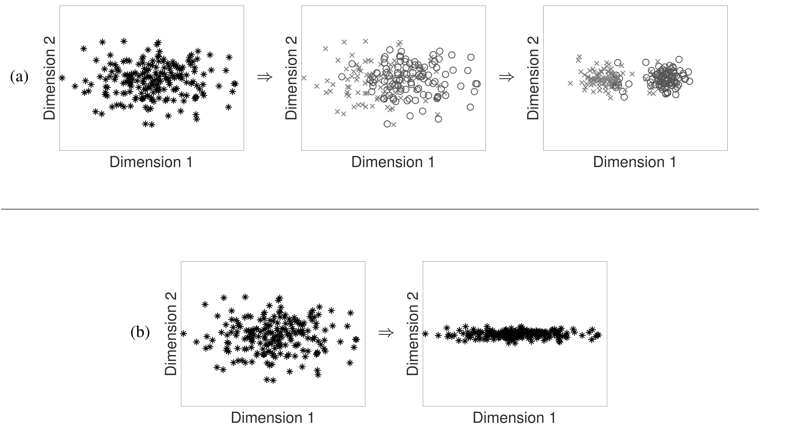
Figure 4.9: Perceptual reorganization according to (a) the standard account of phonetic category learning during infancy versus (b) an alternative account based on perceptual space learning. Source: Feldman et al. (2021).
If infants are not learning segment-sized phonetic categories, what are they learning instead? Some exploratory work suggests that they might be storing numerous short slices of acoustic information extracted from the speech input (Schatz et al., 2021). These acoustic slices do not match segments in size or number, but they may allow infants to discriminate samples of speech as sequences of such units. Eventually, these stored units (i.e., the representation of sounds) become like those adult speakers have. This process of convergence, however, may happen only later when children have access to information other than phonetic signals and word forms, including knowledge of words with their meanings, knowledge of orthography (e.g., how segments correspond to letters) and error-driven feedback of their own production (e.g., how “mispronouncing” a segment may lead to misunderstanding) (McMurray, 2023).
The idea that infants’ perceptual reorganization involves something other than phonetic category learning is a relatively new proposal, and many of the details remain unexplored. However, it is a possibility that warrants serious attention and investigation.
4.2.5 Lexical implications of segmental contrasts
Learning segmental contrasts not only means being able to perceptually discriminate the segments but also to understand their role in lexical distinctions. If /b/ and /d/ are contrastive in the language, it can differentiate lexical items, bin and din, for instance. Therefore, if infants know that /b/ and /d/ are contrastive in their language, we expect them to treat forms such as bin and din as different words. Because this involves understanding what words stand for, we will discuss this question in the next chapter, where we look at how children learn words. For now, let us keep in mind that there is more to learning segmental contrasts than being able to perceptually respond to phonetic differences that correspond to native segmental categories.
4.2.6 Later perceptual development
Children’s perception of segmental contrasts continues to develop beyond infancy and well into adolescence. Toddlers, preschoolers, and school-aged children show gradual changes in the way they categorize speech sounds that are contrastive in their native language. There are three important aspects of this developmental process; we will discuss each in turn.
The first aspect relates to children’s sensitivity to the boundary between speech sounds. This has been primarily investigated using an identification task in which listeners are asked to decide which sound they hear in a phonetic continuum created between two contrasting sounds. For instance, we can create a continuum between /g/ and /k/ by using recorded tokens of the words goat and coat as endpoints and interpolating several in-between steps by gradually changing the relevant acoustic cues, such as the voice onset time and the onset frequency of the first formant, through acoustic synthesis. We can then play tokens from all steps and ask participants to indicate whether they hear goat or coat. The proportion of goat or /g/ identification should decrease as we move away from the goat endpoint and toward the coat endpoint, and there is a point where the response is a 50-50 split between /g/ and /k/, the point where we can postulate the boundary between /g/ and /k/. Fig. 4.10 shows the shape of this curve, known as the identification function, for 6- to 7-year-olds, 11- to 12-year-olds, and adults. As we can see, the function becomes steeper as children become older. This type of developmental change has been demonstrated in a range of contrasts in English, including /g/-/k/, /d/-/g/, /s/-/z/, /s/-/ʃ/ and /r/-/w/ (Hazan & Barrett, 2000; Slawinski & Fitzgerald, 1998). It continues until children are as old as 17 or 18 years of age (McMurray et al., 2018).
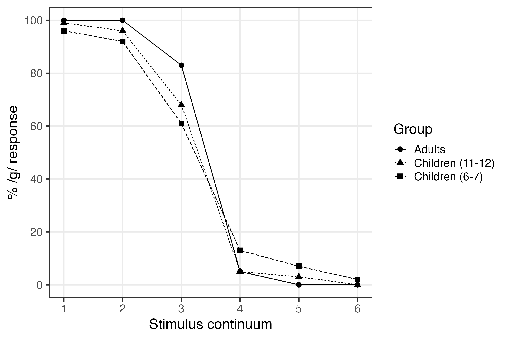
Figure 4.10: Mean identification function of a goat-coat continuum. Stimuli 1 and 6 correspond to the original samples of goat and coat, respectively. The y-axis shows the percentage of goat (/g/) response. The black line shows adult responses. Source: Hazan & Barrett (2000).
What is driving this developmental change? One possibility is that as they grow, children’s boundaries for contrasting sounds become sharper or crisper. Suppose adult listeners of English have a boundary between /g/ and /k/ where the VOT is 25 ms. Because of the sharp perceptual boundaries in adults, even a slight deviation in VOT to either side of 25 ms may make the stimulus a clear token of a /g/ or /k/, so their judgement of a token with, say, 20 ms, can be /g/ 90% of the time. Children may have a more gradient boundary between the two sounds such that their judgement for tokens near the boundary is less categorical, perhaps giving a /g/ response to a token with 20 ms only 80% of the time. Under this interpretation, the age-related shift shown in Fig. 4.10 reflects a change by which speech categories become more discrete as children become older. Another possibility is that the age-related change in Fig. 4.10 is caused by improved perceptual acuity (McMurray et al., 2018). Suppose, for example, both children and adults would classify a token with a 20-ms VOT as /g/ 90% of the time. But children’s perception of VOT may be less accurate, such that a 20-ms VOT is occasionally heard as a 25-ms VOT, leading to a lower /g/ response rate. Under this interpretation, children’s speech categories are no less discrete than adults’. What is changing is how accurately they can detect acoustic differences between speech sounds. Whichever turns out to be the correct interpretation, one thing is certain. Children’s categorization of incoming stimuli along a segmental contrast is not adultlike until late childhood.
The second aspect in which children’s perception of segmental contrasts develops after infancy is revealed in the way speech sounds are classified on the basis of different types of acoustic information, or phonetic cues. Speech sounds that are contrastive usually differ in more than one phonetic dimension. Take the fricatives /s/ and /ʃ/ as an example. As illustrated in the spectrograms in Fig. 4.11, both /s/ and /ʃ/ generate fairly random frication noise scattered over the higher frequencies. However, we see that /s/ (as in see and Sue) has a narrower band of energy concentrated at higher frequencies than /ʃ/ (as in she and shoe). We also see that /s/ and /ʃ/ show different patterns of formants transitioning into the following vowel. The vowel onset has a higher second and third formant (F2 and F3) after /ʃ/ than after /s/. So there are at least two cues that signal the difference between /s/ and /ʃ/: the energy distribution of the noise component and the transition of F2 and F3 into the vowel.
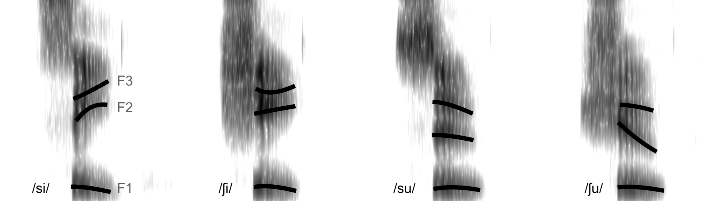
Figure 4.11: Spectrograms for ‘see’ (/si/), ‘she’ (/ʃi/), ‘Sue’ (/su/), and ‘shoe’ (/ʃu/). The superimposed black lines mark the first three formants (F1, F2, and F3) of the vowels.
That there are multiple acoustic dimensions signaling segmental contrasts does not mean that we attend to them equally. As listeners, we may place more weight on some acoustic differences than others, a phenomenon known as cue-weighting. Studies have revealed that there are age-related changes in cue-weighting. Fig. 4.12 displays the identification functions of English-speaking adults and three-year-olds for fricative-vowel sequences from Nittrouer & Miller (1997) and Nittrouer (1992). The fricative component is a synthesized continuum from /ʃ/ to /s/ with a step-by-step change in the portions of higher energy bands (fricative poles). This corresponds to the energy distribution of the noise mentioned above. Each one of these tokens was combined with a natural production of /u/, edited out from recordings of Sue /su/ or shoe /ʃu/, providing typical formant transition patterns following /s/ or /ʃ/. The identification functions for the three-year-olds are different from the adults’ in two ways. First, they are shallower, something that we have already discussed. But second, they also show more influence of the formant transition. If the boundary between /s/ and /ʃ/ can be located where the response is a 50-50 split, we see that adults shift their boundary by about two fricative pole steps depending on whether the following vowel shows a transition from /s/ as opposed to /ʃ/. In contrast, children shifted their boundary by more than 3 steps depending on the vowel transition, showing a greater effect of the formant transition cue.
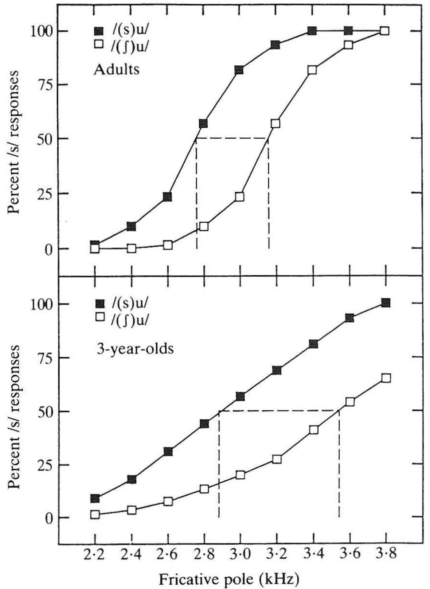
Figure 4.12: Identification function for /s/ vs. /ʃ/ in adults and 3-year-olds. The x-axis displays changes in the noise portion of the stimuli from fricative poles typical of /s/ to those typical of /ʃ/. The black squares show the response percentage for /s/ when the noise portion was followed by a vowel with a post-/s/ formant transition, and the white squares show the equivalent when the noise portion was followed by a vowel with a post-/ʃ/ formant transition. Source: Nittrouer (1992).
Similar differences in cue-weighting between children and adults have been observed for voicing contrasts involving VOT and formant transitions (e.g., /k/-/g/) (Mayo & Turk, 2005), place of articulation contrasts involving burst frequency and formant transitions (e.g., /d/-/b/) (Mayo & Turk, 2004; Ohde & Haley, 1997), stop-glide contrasts involving amplitude rise and formant transitions (e.g., /b/-/w/) (Nittrouer & Studdert-Kennedy, 1986), and liquid contrasts involving transitions in F2 and F3 (e.g., /l/-/r/) (Idemaru & Holt, 2013). The specific weighting of cues is language-specific, which must be learned through experience, and this process has an extended and gradual developmental course. Even 7-year-olds do not have weighting functions that are adult-like for some contrasts, showing that the mastery of cue-weighting is another aspect of contrast learning that continues well into middle childhood.
A third aspect of continued refinement has been identified in children’s understanding of the role of minimal contrasts in making lexical distinctions. We have seen earlier that 1.5-year-old English-learning children can map pairs of words such as pin and bin to different objects, which we take as evidence of their understanding that a minimal contrast, such as /p/ and /b/in English, is sufficient to signal a lexical distinction. However, experiments show that children aged 3 to 6 years still perform much more poorly than adults in tasks learning minimally contrastive new words (Creel & Frye, 2024). This observation has been made for various consonantal and vowel contrasts (e.g., /b/-/p/, /t/-/d/, /s/-/z/, /e/-/ɛ/, /i/-ɪ/, /a/-/ʌ/), and reveals yet another aspect in which the contrastive nature of speech categories improves throughout childhood.
4.2.7 Summary: The development of contrasts in perception
Infants must learn which of the speech sounds they hear represent contrastive segments in their language and which ones do not. This learning process begins some time between 6 to 10 months, when their perceptual sensitivity declines for phonetic differences between noncontrastive segments but improves for those between contrastive segments. This appears to happen without the aid of minimal pairs that could signal the contrastive nature of native segments (e.g., pear and bear for English /p/ and /b/). Instead, infants can discover contrasts by observing the distributional patterns of the phonetic dimensions speech sounds differ by, a process known as distributional learning. Not all contrasts seem to be recoverable from phonetic input alone, however, and various accounts have been proposed to explain how those limits of distributional learning may be overcome. Perceptual development of segmental contrasts continues beyond infancy. During middle childhood and sometimes into adolescence, children’s processing of phonetic stimuli straddling between two contrastive sounds becomes more categorical, and their weighting of phonetic cues for contrasts becomes more adultlike.
4.3 Production of segmental contrasts
4.3.1 Babbling drift
Around the time infants’ perception of speech sounds undergoes attunement to native contrasts, infants begin to babble. As discussed in the previous chapter, babbling typically consists of a closure component that sounds like a consonant and a vocalic component that sounds like a vowel. By definition, babbling is not an attempt at producing a word or phrase. So the fact that these vocalizations can be transcribed using phonetic symbols such as [b] and [a] does not in itself mean that infants have internalized those sounds as contrastive units in the language they are exposed to. In fact, at least initially, the sounds produced in babbling by infants learning different languages are very similar. Researchers who have attempted to transcribe babbling using IPA symbols find that regardless of the ambient language input, most of the closure components of babbling sound like an oral or nasal stop consonant, of which the majority are labial or alveolar (e.g., [b], [d], [m], [n]) (Chen & Kent, 2010; De Boysson-Bardies & Vihman, 1991; Locke, 1983). Fricatives and liquids are very rare. Most of the vocalic component of babbling sounds like a central or mid- to low-front vowel (e.g., [ə]/[ʌ], [ɛ], [æ]), again, regardless of the language of exposure (Buhr, 1980; De Boysson-Bardies & Vihman, 1991; Kent & Murray, 1982).
🔈 Here are samples of babbling produced by three 8-month-olds. Each one is learning one of the following languages: Arabic, French, and German. Try to guess which one is which. You will find the answer at the end of this chapter)
However, there are some indications that babbling gradually begins to display some of the specific phonetic characteristics of the ambient language. This idea is known as babbling drift (Brown, 1958). For example, in babbling produced at 9 months and later, the proportion of sounds identified as labial tends to be higher in French than in Swedish or Japanese (De Boysson-Bardies & Vihman, 1991). Labials are more frequently produced than alveolars by French- and English-learning infants, but are less frequently produced than alveolars by Mandarin-learning infants (Chen & Kent, 2010). Compared to English-learning infants, Korean-learning infants produce more dorsal sounds and fewer coronal sounds (S. A. S. Lee et al., 2010), and Mandarin-learning infants produce more affricates in babbling (Chen & Kent, 2010). These differences are consistent with the distribution of the relevant consonants in words that infants hear in the speech that is addressed to them. For instance, words that infants target in French tend to contain more labials than target words in Swedish or Japanese. This suggests that the vocalizations infants produce in babbling are influenced by the language-specific input.
Crosslinguistic differences in babbling are also attested in the vowel-like component. The F2/F2 ratios of vocalic components measured in babbling from English, French, Arabic, and Cantonese infants match those of the vowels in the respective adult languages (De Boysson-Bardies et al., 1989). The low vowel [ɑ] is heard more frequently in babbling in Mandarin-learning than English-learning infants, again, mirroring the patterns of the input languages (Chen & Kent, 2010).
It should be noted, though, that questions have been raised about the reliability and validity of such data as evidence for babbling drift. The interpretation that babbling sounds different between languages has been based on samples of babbling that are too small to give us the necessary level of confidence in the outcomes (Rvachew & Alhaidary, 2018). Another thorny issue is that the decision to treat a sample of speech as babbling, as opposed to word production, rests largely on the analyst’s judgement. That makes it difficult to rule out the possibility that some of the tokens classified as babbling are in fact nontargetlike attempts at producing words in the language (C.-C. Lee et al., 2017). If so, the reported crosslinguistic differences may be partly an observation about the sound patterns of the target words rather than the effects of the input language on babbling.
4.3.2 Emergence of contrasts in word production
Around their first birthday, most children begin to produce vocalizations that are recognizable as words. Unlike babbling, word production targets specific sounds contained in a word, so by examining how different sounds are produced in words, we can establish when and how sound contrasts emerge in production. Acoustic analysis of early word production reveals an interesting developmental pattern for sound contrasts. For instance, using pictures and toys, Macken (1980) elicited word-initial stops from four English-learning children between the ages of 16 and 18 months, and followed them for 8 months. Fig. 4.13 shows their mean voice-onset time for the voiced stops (lower line) and the voiceless stops (upper line). We can see that the difference in the children’s voiceless-voiced pairs (i.e., /b/-/p/, /d/-/t/, and /g/-/k/) and their relationship to the adult counterparts undergo several changes. First, there is a period (Phase I) when there is no detectable VOT difference between the voiced-voiceless pair. One child, Tom, appears to have passed this stage by the initial session, and another, Joy, remains in this stage throughout the data collection period. Next comes a period (Phase IIA) during which voiced and voiceless stops are produced with VOTs with a verifiable difference, which is nonetheless smaller than the difference observed in adult production. Both the voiced and voiceless also have VOTs shorter than the adult boundary. For some children, this is followed by a phase (IIB) when both stops are produced with VOTs that are comparable to the adult values, but others enter a phase (IIIA) where the VOTs of the voiceless stops are overshot, before they are brought down to adult-like values (IIIB).
![Voice-onset times of target voiced stops (lower line) and voiceless stops (upper line) produced by English-speaking 1-year-olds. The two dotted horizontal lines show adult means, and the solid horizontal lines indicate the adult boundaries between voiced and voiceless stops. Children's VOT values are plotted in 'x's when there was a statistically significant difference between the means for the voiced and voiceless stops, but otherwise in black dots. Some data are collapsed across a number of sessions (e.g., 3/4 shows data pooled between sessions 3 and 4). Source: @macken1980.](images/MackenBarton.png)
Figure 4.13: Voice-onset times of target voiced stops (lower line) and voiceless stops (upper line) produced by English-speaking 1-year-olds. The two dotted horizontal lines show adult means, and the solid horizontal lines indicate the adult boundaries between voiced and voiceless stops. Children’s VOT values are plotted in ’x’s when there was a statistically significant difference between the means for the voiced and voiceless stops, but otherwise in black dots. Some data are collapsed across a number of sessions (e.g., 3/4 shows data pooled between sessions 3 and 4). Source: Macken (1980).
The trajectory illustrated by Fig. 4.13 shows that whether children produce contrastive segments in the language as phonetically distinct sounds and whether they produce them in the same way that is articulated by adults are different issues. In fact, we see that children learn to differentiate contrastive segments before they learn how to produce them accurately. In Phase IIA and IIIA, voiceless and voiced stop targets already have distinct VOTs, although they do not have the same values as adults. In other words, their phonological system has a voicing contrast even though the phonetic realizations are not adult-like. In particular, during Phase IIA, children’s productions of target /b/ and /p/ would both sound like /b/ to an adult ear because their VOTs are usually below the boundary for the voicing distinction of adult listeners of English. Such an acoustically systematic difference that is imperceptible to untrained adult listeners is called covert contrast (Hewlett, 1988). Another example of covert contrast can be found in children’s production of /s/ and /ʃ/ in English. Li et al. (2009) had experienced adult transcribers listen to /s/ and /ʃ/ produced by 2- to 3-year-olds in words such as seat and sheep. The transcribers thought that the /s/ and /ʃ/ produced by some of the children were all tokens of /s/, but when the speech of those children was analyzed acoustically, it was evident that tokens targeting /s/ and /ʃ/ had reliably different profiles in terms of their fricative noise or F2 onset. Covert contrast has also been observed for a range of other contrast types, including place of articulation (e.g., /t/ vs. /k/) (Forrest et al., 1990; Song et al., 2012) and stop/fricative distinctions (e.g., /d/ vs. /ð/) (Shattuck-Hufnagel et al., 2015). It is believed to be the norm rather than an exception to the general developmental pattern for phonological contrasts (Scobbie et al., 2000). The presence of covert contrast also has a methodological implication. When a transcription of word production by a young child suggests that two different target segments are produced as a single sound, there is a possibility that the contrast is there, just not detectable to an adult listener. Phonetic transcription is, therefore, not the best tool to examine when sound contrasts emerge in children’s production.
🔈 Listen to these words, which were produced by a boy during a single recording session when he was 2 years old. Some were intended as big and some as pig. Which ones are which? You will find the answers at the end of this chapter.
4.4 Acquisition order of speech sounds
What adults hear, of course, can be a valuable source of information too. After all, children will eventually have to learn how to articulate the speech sounds of the language in a manner that matches the perception of those sounds by mature speakers of the speech community. This type of listener-based criterion is of particular importance for clinicians and speech pathologists, who use adult judgment as a benchmark to assess the targetlikeness of children’s sound production in order to identify children who are not following the typical trajectory of speech production development. There is a large body of clinical work documenting the order in which the production of individual speech sounds becomes adult-like based on researchers’ impressionistic judgment, typically in the form of percent “correct” production of consonants and vowels, and the age at which this measure reaches a certain criterion, such as 75% and 90% (see for example McLeod (2007)).
The order of acquisition established with such a method shows considerable differences between languages and even between individuals learning the same language (Vihman et al., 1986). However, when we look at the average age at which different sounds meet the criterion, we do find some common patterns that apply across languages (McLeod & Crowe, 2018). Adultlike production is usually reached early in oral and nasal stops (e.g., /p/, /t/, /m/, /n/) and nonpulmonic consonants (e.g., clicks), and then in fricatives (e.g., /s/, /ʃ/), affricates (e.g., /ʧ/, /ʤ/), trills ([r]) and flaps ([ɾ]). Interdental fricatives ([θ], [ð]) and the rhotic approximant ([ɹ]) tend to be among the latest acquired sounds. To a large degree, these crosslinguistically common orders of development can be explained in terms of the basic phonetic demands in producing or perceiving those sounds. For instance, fricatives and affricates are more motorically challenging to produce than oral stops (Kent, 1992). In order to produce a fricative or an affricate, we must hold the tongue or lips in a position that forms a narrow constriction that creates turbulence when the air is rapidly passed through. In contrast, an oral stop can be produced through a ballistic gesture—a quick and forceful muscle contraction—which does not require the same amount of control. The difficulty in acquiring interdental fricatives is partly related to the complexity in identifying differences among nonsibilant fricatives such as [θ] and [ð], which requires formant transition cues in addition to characteristics of the fricative noise (Edwards & Beckman, 2008; Harris, 1958).
These patterns shared across languages are sometimes modulated by the frequency at which different sounds occur in the specific language, such that the acquisition timing is earlier for sounds that children hear and reproduce more often. Fig. 4.14 shows that the affricate /ts/ is more frequent than the stop /t/ in Cantonese, but much less frequent than /t/ in Greek. While both Cantonese and Greek 2- and 3-year-olds follow the universal tendency in being more accurate in producing /t/ than /ts/, the difference is less pronounced for Cantonese-learning children (Edwards & Beckman, 2008). Similarly, both English- and Greek-learning children are less accurate in producing /θ/ than /s/, confirming the crosslinguistic observation that interdental fricatives are difficult sounds to master. But English-learning children are much less accurate in producing /θ/ than Greek children, and this seems to be related to the fact that /θ/ is significantly less frequent than /s/ in English while it is slightly more frequent than /s/ in Greek (Edwards & Beckman, 2008).
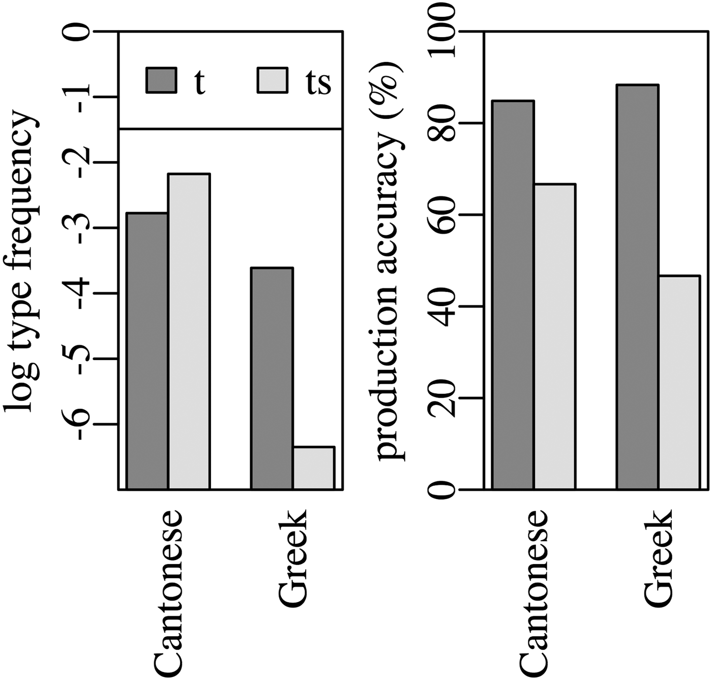
Figure 4.14: Frequency (left) and percent correct (right) for Cantonese and Greek /t/ and /ts/. Frequency is based on the number of words that contain /t/ or /ts/ (type frequency) and log-transformed. Source: Edwards et al. (2015).
4.4.1 Phonological processes
Another type of observation, often based on adult perception of children’s speech production, involves what are known as phonological processes. A phonological process refers to a systematic mismatch between the target word and adults’ impression of children’s production. At the segmental level, the most frequently reported processes are substitutions: the child’s production contains a segment that sounds like a different phoneme (e.g., ‘sea’ produced as [ti]). Another common process is deletion: the child’s production is missing a segment, typically from a cluster of consonants (e.g., ‘brush’ as [baʃ]) or in syllable-final position (e.g., ‘moon’ as [mu]). Because most cases of deletion are related to the position of the affected segment in a broader phonological context, we will discuss them separately in Chapters 5 and 6. Here, we will focus on what are usually classified as substitutions.
The following are the most commonly observed types of substitution reported for children learning English between the ages 1 and 4 years. Examples are drawn from Ingram (1989).
- Stopping: Fricatives and affricates are produced as stops (e.g., ‘zoo’ [duː], ‘church’ [dəːt]).
- Fronting: Velars and alveo-palatals are produced as alveolars (e.g., ‘key’ [tiː], ‘shoe’ [su]).
- Gliding: Liquids are produced as glides (e.g., ‘red’ [wɛd], ‘lie’ [jaɪ]).
- Voicing: Initial voiceless stops are voiced (e.g., ‘pie’ [baj], ‘toe’ [du]).
Observations like these tend to draw the attention of researchers and nonresearchers alike, because they appear to merge (or neutralize) two sounds that correspond to separate phonemes in the language acquired. If /z/ is produced as [d], then the distinction between /z/ and /d/ is lost in the production (e.g., both ‘zoo’ and ‘do’ are pronounced as [duː]). There are two important caveats to this interpretation. First, children who exhibit substitutions may still be producing covert contrasts that elude an adult listener. Thus, the [d] produced for ‘zoo’ may be phonetically different from the [d] in ‘do’, and so can be the [t] produced for ‘key’ from the [t] in ‘tea’. Second, what we think the target is turning into is often a product of our bias as an adult listener of a particular language. One of the most dramatic illustrations of this effect can be found in children’s production of stops across languages such as English and Spanish. As we saw in Fig. 4.13, English-learning one-year-olds sometimes produce both voiced and voiceless targets with a short VOT (or short lag, as the onset of the vocalization lags slightly behind the release burst). Because the boundary between voiced and voiceless stops in English has a longer VOT (long lag), stops with short lag are perceived as voiced; hence the label “voicing” for cases such as ‘pie’ produced as [baj]. It turns out that Spanish-learning children have the same tendency as English-learning children in that they produce stops with short lag for both voiced and voiceless targets (Macken & Barton, 1980). However, in Spanish, voiced stops are produced with voicing lead with the vocalization starting before the release burst (i.e., it has a “negative” VOT) and voiceless stops are produced with short lag. The short lag stops that Spanish children produce, therefore, are perceived as voiceless by adult Spanish listeners, and the impression is that children are “devoicing” even though, phonetically speaking, the sounds produced are essentially the same as English-learning children.
With these caveats in mind, we can ask why children’s early word productions regularly show these patterns. Again, articulatory factors play a major role. Stopping can occur when a child attempts to produce a fricative by positioning their articulator that creates a narrow air passage but overshoots the gestural target, creating a complete closure that results in an oral stop. Fronting of velar stops is attributable to children’s tendency to move the tongue and jaw as a single unit due to a lack of gestural coordination skills (McAllister Byun, 2012). The resulting stop productions have undifferentiated contact between the tongue and the palate, which sounds like an alveolar stop to an adult ear (Gibbon, 1999). Gliding of the English /r/ sound is also likely to be a product of such gestural coordination limitations. Articulation of /r/ involves complex movements of the tongue tip and tongue body, accompanied by narrowing of the vocal tract in the front of the mouth and the pharynx. When a child fails to execute the pharyngeal constriction, it can cause the sound to be heard as /w/, which involves narrowing of the oral cavity that is similar to that for /r/ but without pharyngeal narrowing (McGowan et al., 2004). Voicing/devoicing is a result of the child producing a short lag stop, which is easier than long lag or voicing lead stops (Kewley-Port & Preston, 1974). To produce a short lag stop, the vocal folds can be closed in preparation for the vocalization at any point during the closure in the oral cavity, which typically lasts for about 100 ms. In contrast, production of long lag and voicing lead requires a much more precise timing between the vocal folds and oral articulators.
4.4.2 Summary: The development of contrasts in production
There are observations indicating that the sounds produced by children begin to show the effects of the ambient language during babbling. When children begin to produce words, some of the target sounds become contrastive only gradually, often undergoing a period when the sounds are differentiated in a way that is different from the phonetic distinction made by adult speakers. Children take longer to master adult-like production of certain sounds, sounds that also tend to be produced in a way that leads to the impression that they are substituted by other sounds. These sounds are thought to be more challenging for both articulatory and perceptual reasons.
4.5 Answers to audio quizzes
- Here are the answers to the quiz about babbling in Section 4.3.1. Sample 1: German. Sample 2: French. Sample 3: Arabic. The German sample is taken from the PAIDUS project (Lleó & Prinz, 1996). The French and Arabic samples are from the OHLL project (Kern et al., 2009).
- Here are the answers to the quiz about the productions of big and pig. Sample 1: big. Sample 2: pig. Sample 3: big. Sample 4: pig.
4.6 Further readings and resources
- Perceptual reorganization: A classic reference to this developmental process is Werker & Tees (1984). For a more recent summary on the topic, see Werker (2024). Tsuji & Cristia (2014) provide a meta-analysis of perceptual attunement studies on vowels.
- Perceptual magnet effect: This effect follows from a particular model of speech perception development called the Native Language Magnet (NLM) theory. For a detailed account of the NLM, see Kuhl (1993).
- Distributional learning: See Cristia (2018) for a comprehensive review and meta-analysis of studies testing the effects of distributional learning.
- Development of speech perception during childhood: For an overview of the development of speech perception between infancy and adulthood, see Walley (2005).
- Developmental accounts of cue-weighting: There is a debate over why children weight cues differently from adults. One account is that children first focus more on formant transition cues because such cues can help them identify words in running speech but gradually shift the weight toward other cues (Nittrouer & Crowther, 1998). An alternative account is that children rely more on acoustically salient cues than adults because they have less developed auditory processing systems (Sussman, 2001). See Mayo & Turk (2005) for evidence contrary to both accounts.
- Babbling: Rvachew & Alhaidary (2018) is a useful review of the phonetics of babbling, and includes a discussion of babbling drift.
- Covert contrast: For an insightful discussion of covert contrast and its implications for phonological acquisition, including developmental delays and disorders, see Scobbie et al. (2000).
- Order of acquisition: McLeod (2007) is a comprehensive summary of accuracy and age-of-acquisition data from many languages.
4.7 Discussion questions
- Distributional learning faces difficulties in explaining how phonetic categories can be learned when there is substantial overlap in the acoustic distribution of the categories. Review the proposals made to address this problem and discuss their merits and issues.
- In this chapter, we learned about the perceptual reorganization that takes place during infancy (until about 1.5 years) and further developmental changes that occur after that. Are the changes in these two periods qualitatively distinct, or are they better understood as parts of the same developmental process?
- In a famous anecdote that illustrates what has become known as the “fis phenomenon”, Berko & Brown (1960, p. 531) report the following exchange. > One of us, for instance, spoke to a child who called his inflated plastic fish a fis. In imitation of the child’s pronunciation, the observer said: “This is your fis?” “No,” said the child, “my fis”. He continued to reject the adult’s pronunciation until he was told, “This is your fish.” “Yes,” he said, “my fis.”. How would you explain this phenomenon based on what we know about the perception of minimal contrasts, neutralization in speech production, and covert contrast?